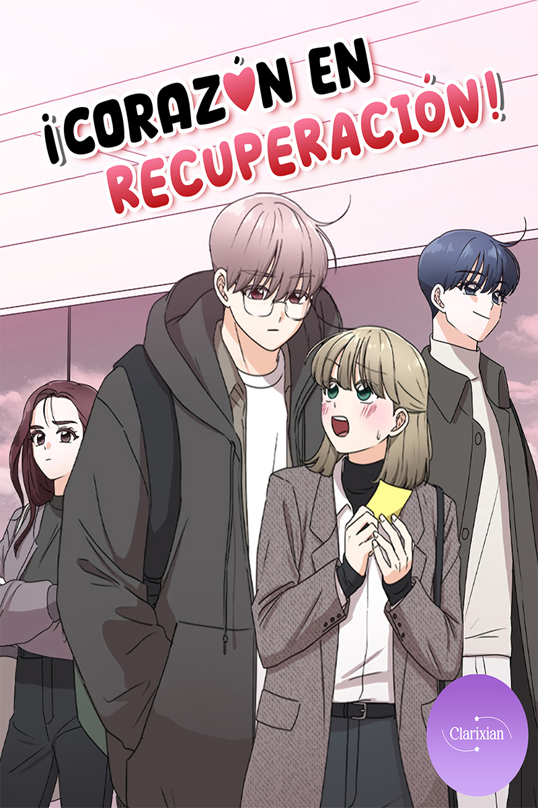

Sinopsis
¿Por qué se parece a mi ex...? Después de un primer amor traumático, Mijung está decidida a dejar atrás su pasado y comenzar de nuevo en la universidad. ¡Pero cuando ingresa a la escuela, conoce a un estudiante de último año con exactamente la misma cara que su primer amor! ¿Será capaz de curar sus cicatrices pasadas y aprender a amar de nuevo?